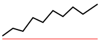

LOCAL RASTER
cover / contain / fill
EXTERNAL SVG

img src="assets/chart.svg"
HTML RESOURCE BOUNDARY
The page names a relative asset.
CLI maps it with -asset.
HTTP sends it as multipart.
REMOTE URL
An absolute URL is fetched by the renderer.
This reference stays local and deterministic.